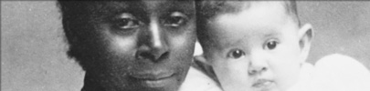

In the early years of the territory few women came to the Klondike. Only a very small percentage of these women were Black.
Although initially there was little work for women aside from the dance halls, Black women earned a living by baking or sewing, working as domestic servants, mining and even running their own businesses.
“I have never heard anyone talk of Mrs. Hunter without the utmost respect.”
Lucille Hunter
Lucille was pregnant and only 19 years old when she and her husband Charles left the United States in 1897 and made the trip to the Klondike. They travelled via the Stikine Trail, one of the most difficult routes to the Yukon. When they reached Teslin Lake, Lucille gave birth to a daughter, who they named Teslin.
The family continued on to Dawson, arriving there well before most of the stampeders. They staked a claim on Bonanza Creek in February 1898 and lived for a time at Grand Forks, at the confluence of Bonanza and Eldorado creeks.
After Charles died in 1939 Lucille continued to operate gold claims in Dawson and silver claims near Mayo.
Every year she walked more than 200 km from Mayo to Dawson and back again. In 1943 she moved to Whitehorse, where she operated a laundry. Although she was completely blind in her later years she continued to be fiercely independent.
(Above)
This photo was taken on September 17, 1914. By 1924 the population of the Yukon had dropped to 4,157 and only six Black people remained in the territory.
Yukon Archives, Margretta Gaundrove collection, 82/219 #59
Lucille Hunter, at her home in Whitehorse, 1960. She died June 10, 1972 at the age of 93.
Yukon Archives, Richard Harrington fonds, 79/29 #277
Teslin Hunter, back, with (front, l-r) Grace and Irene Murray,
Alice Williams and teacher Mrs. Clark leaving Grand Forks
to go on a picnic, 1911.
Yukon Archives, Grace McBride fonds, 90/02 #13
Buster Hunter, grandson of Lucille and Charles Hunter,
ice fishing circa 1935.
Yukon Archives, R. Butterworth fonds, 85/84 #9546

People outside various stores on Front Street north of Harper Street [circa 1898, Dawson City].
© Canadian Museum of Civilization, photo by E.A. Hegg J6246

An unknown Black woman, Iola Beebe, Bera Beebe, Swiftwater Bill Gates and an unknown man in front of Gates’s cabin on Quartz Creek.
Library and Archives Canada / C-014550
Lillian Mabel Taylor was a resident of Livingstone Creek and Whitehorse from 1902-1913. She worked as a cook and laundress, probably at the roadhouse, and also owned mining claims.
Yukon Archives, Eva Stehelin collection, 2002/53 #1

Courtesy of Parks Canada, Anita Johns collection, #250